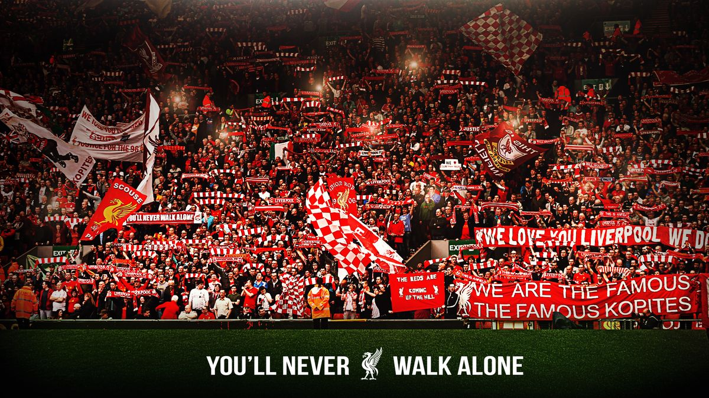

Sejarah
Liverpool Football Club didirikan pada tahun 1892 setelah perselisihan antara Everton Football Club dan John Houlding selaku pemilik lahan Anfield. Perpecahan ini memaksa Everton pindah ke Goodison Park, sementara Houlding membentuk Liverpool FC untuk mengisi kekosongan di Anfield.
Di bawah asuhan manajer legendaris Bill Shankly pada tahun 1960-an, klub ini bertransformasi dari tim divisi dua menjadi kekuatan yang ditakuti. Shankly tidak hanya membawa kesuksesan di lapangan, tetapi juga menciptakan identitas kuat melalui filosofi The Boot Room dan mengubah warna seragam menjadi merah seluruhnya untuk memberikan kesan psikologis yang lebih tangguh kepada lawan.
Memasuki era terbaru, Jurgen Klopp berhasil mengakhiri penantian 30 tahun untuk gelar Liga Premier pada tahun 2020. Kini, setelah transisi kepemimpinan ke era Arne Slot, Liverpool terus berusaha mempertahankan posisinya sebagai kekuatan dominan di kancah sepak bola dunia dengan tetap memegang teguh warisan sejarah dan tradisi mereka.